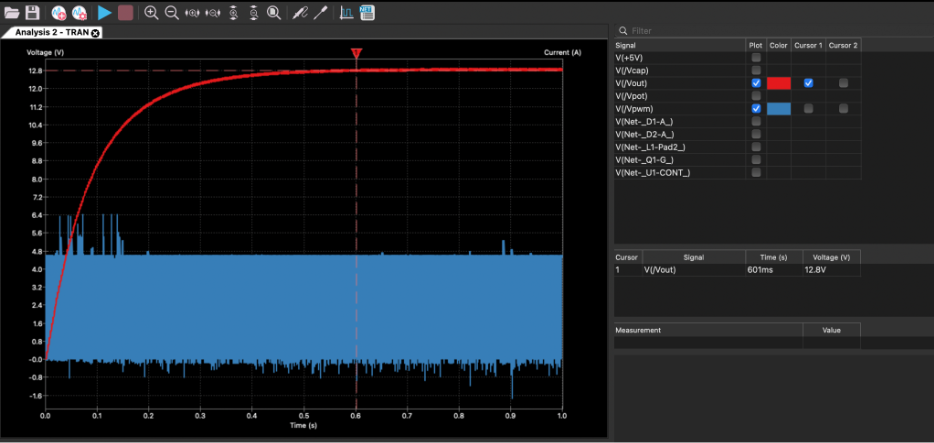
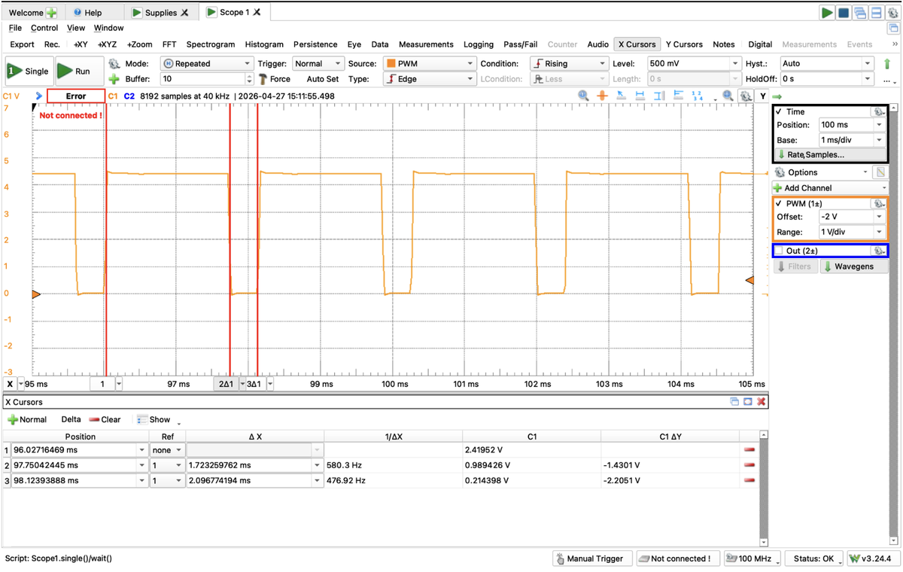
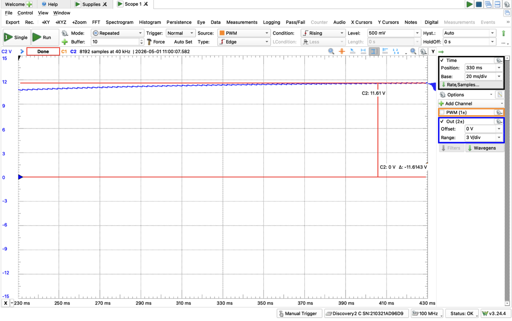
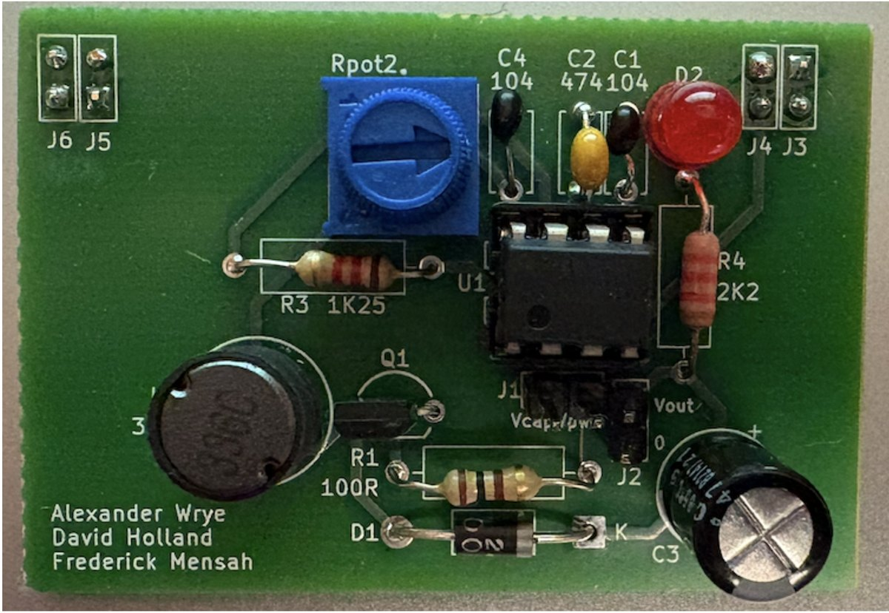

555 Boost Converter
A 555 timer, a MOSFET, and a 33mH inductor turning 5V into 12V. Every component value was derived on paper first, then checked in simulation, then measured on a board we had fabricated.
- 555 Timer
- KiCad
- SPICE
- PCB Layout

Overview
The converter runs off a 5V supply and holds an LED load at 12V. A 555 timer in astable mode generates a 500Hz PWM signal; that signal switches a MOSFET, which pulls current through a 33mH inductor during the on-time and then lets the inductor dump through a diode into the output capacitor during the off-time. The interesting constraint is that the inductor has to store at least as much energy per cycle as the load spends per cycle, which is what sets the duty cycle.
This was a team of three. I derived and ran the inductor energy analysis, took the bench measurements and tabulated the results, and helped build the circuit.
The circuit
- PWM stage
- A 555 in astable mode. RA, RB, and a timing capacitor set the frequency and the duty cycle between them.
- Switch
- A MOSFET driven by the PWM output, tying the bottom of the inductor to ground for the on-time.
- Inductor
- 33mH, measured at 53.2Ω of series resistance on a multimeter — large enough that it has to appear in the energy calculation rather than being ignored.
- Output stage
- A diode into a 100µF capacitor, which holds the output up while the switch is closed and the inductor is charging.
- Load
- An LED with a 2V forward drop in series with 2.2kΩ, drawing 4.54mA off the 12V rail.

Designing the values
- Duty cycle sets RB
- A 90% duty cycle with RA at 10kΩ solves to RB = 1.25kΩ. The nearest part in the lab kit was 1.2kΩ.
- Frequency sets the timing capacitor
- 500Hz across that resistor network needs 0.384µF, so 0.47µF went in.
- Allowable droop sets the output capacitor
- The load pulls 4.54mA for the whole 2ms period. Keeping the output inside 1% of 12V — 120mV of droop — takes 75.7µF, so 100µF went in.
- The energy check
- The MOSFET drops 0.24V, leaving 4.76V across the inductor. Solving the inductor current ODE over the 1.8ms on-time gives 84.6mA, which stores 118µJ. The load spends 109µJ per cycle, so the inductor carries each cycle with a little margin.
Simulation and measurement
The simulation and the bench disagreed in the same direction, which is the useful kind of disagreement. KiCad gave a 1.83ms high time on a 2.16ms period — 85% duty — and an output plateau of 12.8V. On the real board, an Analog Discovery 2 read 1.72ms high on a 2.10ms period, so 82% duty at 477Hz, with the output settling at 11.6V.


Results
| Parameter | Designed | Simulated | Measured | Error |
|---|---|---|---|---|
| PWM period (ms) | 2.00 | 2.16 | 2.10 | 5.0% |
| Duty cycle (%) | 90 | 85 | 82 | 8.9% |
| Output voltage (V) | 12.0 | 12.8 | 11.6 | 3.3% |
Everything landed inside spec — the brief asked for 500Hz at a duty cycle somewhere between 50% and 90%. The gaps are all explainable. Resistor tolerances in the 555 network move the period, and the potentiometer in that network is the least ideal part on the board. The output sitting under 12V is mostly the inductor's 53.2Ω of series resistance, which the simulation treats far more kindly than a real winding behaves.
The board
The circuit was captured and laid out in KiCad, then fabricated as a two-layer board. The potentiometer sits at its halfway mark, which puts it near the 5kΩ used in simulation, and turning it shifts the PWM without touching anything else.

What I'd do differently
The 8.9% miss on duty cycle is the one worth fixing. The timing network runs through a potentiometer, and a wiper's resistance is not something the 555 timing equations account for — a pair of fixed resistors would have landed much closer to 90%, at the cost of losing the adjustment. I'd also spend the time to find a lower-resistance inductor. 53.2Ω across a 33mH part shows up twice, once in the MOSFET drop calculation and again in the output sitting at 11.6V instead of 12V, and a better-wound part costs nothing but a different order number. Beyond that, the load is a single fixed LED branch; I'd want to sweep a range of loads to see how far the output actually holds before the 100µF capacitor stops keeping up.